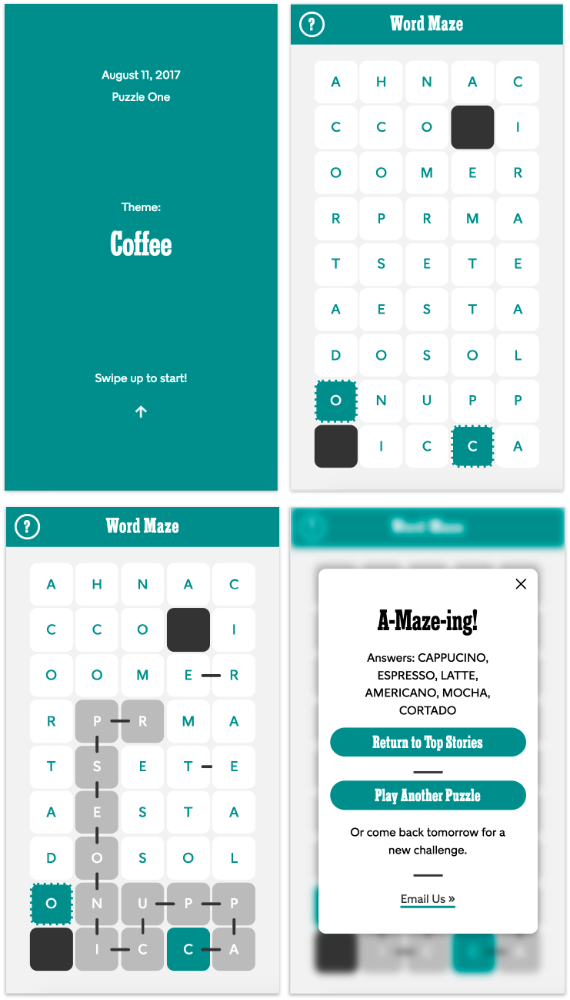

Spelling Bee
The NYT Games Expansion Team is currently exploring new audiences and opportunities by rapidly prototyping and user testing game concepts.
As part of that effort, I spent two weeks designing and developing a prototype of Spelling Bee that was tested on the mobile web homepage of The New York Times.
Background
Spelling Bee is one of the variety puzzles found in The New York Times Magazine. Notoriously difficult, it's usually played over multiple sessions - a lot of players we interviewed described their routine of leaving the magazine out on their coffee table so that they could come back to it throughout the day.
Our challenge was to see if we could recreate this analog experience in a digital game.
Process
When it comes to process, the Expansion team values speed above all else - we aim to validate or discard ideas as quickly as possible by building MVPs and testing them within a 2-week timeframe.
After an initial kickoff meeting with our game designer and product manager, I designed and coded a prototype in three days and did a round of internal user testing to answer some gameplay questions.

The feedback from the user testing was pretty unanimous - the game, an exact interpretation of the original rules of Spelling Bee, was too difficult.
Taking that feedback into account, we made the rules and scoring a little less rigid and I built a second iteration of the prototype.
User Testing
Once the second iteration was complete, we ran a 2-week A/B test of Spelling Bee on the mobile web homepage of nytimes.com that was an overall success. Excitingly enough, we found that a significant number of players were coming back to the prototype multiple times a day and our test group showed signs of habituation by the end of the test.
We're currently figuring out next steps for our beloved Bee, but for now, please enjoy some of my personal favorite feedback emails:
I love the spelling bee game! My best friend and I play every night and text each other our scores through the evening and then compare our word lists. It's really great fun. Please keep it around.
Very fun! I got my 94 year old dad into it. He's a New York Times crossword puzzler from way back!
I am completely hooked on this game!! My fiance and i are long distance for the summer and sending our spelling bee answers to one another quickly became a very loving ritual for us! We can't wait until the game is back!! Thanks!
Design Sprint: Daily Flow
Last October, a subset of the Games team had a weeklong product ideation session inspired by Google Ventures' Design Sprint. I acted as the technology representative in a 7-person group that spanned product & project management, design, and editorial.
Setting a Goal
The first step of our process was actually to reset our goal. Our pre-ordained goal was to answer the question "how can we help Crosswords users find more value in our product?"
Looking at this goal from a human centered design perspective, we saw some major issues and had a lot of questions: Why is this entirely business driven? Are we trying to design for *every* Crosswords user? What sort of value are we trying to provide?
After a quick reset and a brainstorming session, we came up a new challenge for the week:
Create an experience beyond the Mini Crossword that allows users to feel accomplished every day, targeted towards people who can only solve the Mini.
Ideation
After a couple of days of interviewing experts from marketing, editorial, and engineering about the ins and outs of our product, we spent a day rapidly churning out wireframes of our ideas. A round of voting followed, and we decided to pursue one of my sketches - a concept called The Daily Flow (I know, I know, the name is weird. It was never meant to last forever!)

It's a pretty well known fact that there's a huge barrier to entry for The Crossword. Since so much of the content is fact-based, the entire game tends to be all or nothing - you either know the answer or you don't.
Interestingly enough, Deb Amlen, the editor of the Wordplay blog, told us that she firmly believes that "anyone can solve a Crossword; they just have to learn how!"
With those two things in mind, I designed The Daily Flow as a series of mini games based on crossword clues that can be played either as a standalone experience or a way to get a head start on the Daily Crossword.
User Testing
At the end of the week, we had a paper prototype of the full Daily Flow experience - a user plays ~16 mini games and, at the end of the game, is given the option to continue to the Daily Crossword, where they'll see a grid pre-populated with however many of the 16 answers they got right.
We tested our prototype on a number of different people who play the Mini puzzle and found that they enjoyed the mini games as a standalone experience and were particularly delighted when their pre-populated Crossword was revealed.
The next steps for this project are to create a digital version to test habituation and figure out if this can be used as an onboarding tool. Stay tuned!
Matter Ventures
In 2016, The New York Times partnered with Matter.vc and participated in their five month design thinking program. Two colleagues and I represented NYT and worked alongside the startups in Matter's program to design a new product for The Times.
The program culminated in a Demo Day where we pitched our product to an audience of internal stakeholders and VCs at Google NY.
Understanding Our Audience
There are several things that we know about casual NYT readers: they do more skimming than reading, they don't seem to know their way around our content, and they rarely come back to our site.
As an organization, we have a ton of data about our readers' habits, which my colleagues and I initially wanted to use as a starting point for our project. The more we looked at the data, however, the more we realized that we know a lot about what our readers are doing, but not as much about why they're doing it.
With this in mind, we conducted some user interviews and met Stephanie, a young professional and casual Times reader. During our interview, Stephanie told us that she spends "too much time" on social media. We asked her to elaborate and she said that whenever she has a small chunk of free time - while waiting for the train or standing in line for coffee - she checks various social media apps simply to kill time but doesn't really get anything out of it.
Our Challenge
Stephanie's comment about killing time really struck us, so we asked ourselves: How can we help people spend bits of free time in a fulfilling way?
We think that fulfillment generally comes from finding something that's right for you, which naturally led us to examine how our organization handles personalization.
The Times currently has two primary approaches to personalization:
- Algorithmic recommendations based on what you've already read
- Highly-curated, topic-based sections (Politics, Science, Style, etc)
There are some downsides to these two approaches: with algorithmic personalization, you eventually get reduced down to a few meta tags and your recommendations become predictable (spoiler alert: more real estate listings!). With self-selected, the onus is on you to figure out what you like and the amount of effort it takes to get a variety of content increases.
Our mission was to find the sweet spot between those two types of personalization where a reader can tell us what they want and feel confident that we'll deliver exactly that.
What are you in the mood for?
The solution that we designed is a series of mood/goal based prompts - things like "Make me feel better about the world" and "Give me something to talk about over dinner" - that lead to curated collections of content.
The most important characteristics of these collections are that they're...
- Curated: this is crucial to the experience because our journalists and editors are able to measure the emotional impact of a story in a way that an algorithm simply can't.
- Finite: each collection contains 4 to 6 pieces of content - we want this to feel like something that you can accomplish during little bits of free time.
- A Discovery Tool: The Times has so much rich, evergreen content that a new reader may never encounter solely because of timing. Our goal with this product is surprise readers with something different and deliver interesting (rather than timely) content.
Bringing it all together
We've already run some A/B tests in a couple of newsletters to test engagement around these mood based prompts and have been encouraged by the results. The final step of this journey is to bring the collections together in one place. Our hope is that this can become a destination for people like Stephanie where they can reliably find content that's full of surprises but feels just right.
Word Maze
This is the latest prototype built for the Games Expansion. We're running an A/B test next week, so stay tuned for more details!
NYT Crosswords
Last year, I helped replatform The New York Times Crossword web app from a proprietary PHP/JS framework to a Node stack using React and Redux.